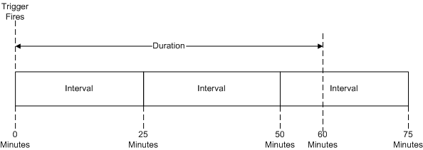

title: Repeating A Task description: Task Scheduler can run a task any number of times after a trigger is fired. ms.assetid: 69c60713-134c-4602-9e7b-cc3eea871068 keywords:
Task Scheduler can run a task any number of times after a trigger is fired. To do this, the trigger defines a repetition pattern that tells Task Scheduler how long it should continue to repeat the task and the time interval between each task repetition.
The following illustration shows a repetition pattern with a duration of 60 minutes and an interval of 25 minutes. Be aware that in this case, Task Scheduler runs the task when the trigger is fired, it runs the task again after 25 minutes, then runs the task again after 50 minutes depending on the setting of the StopAtDurationEnd property of IRepetitionPattern (RepetitionPattern.StopAtDurationEnd for scripting). If the StopAtDurationEnd property is set to True, Task Scheduler stops the last instance of the task if it is still running after 60 minutes. If the StopAtDurationEnd property is set to False, the last instance of the task is run regardless of the duration.

If you register a task that contains a trigger with a repetition interval equal to one minute and a repetition duration equal to four minutes, the task will be started five times. The five repetitions can be defined by the following pattern:
Windows Server 2003, Windows XP and Windows 2000: If you register a task that contains a trigger with a repetition interval equal to one minute and a repetition duration equal to four minutes, the task will be started four times.
For scripting development, the repetition pattern is defined using the RepetitionPattern object.
For C++ development, the repetition pattern is defined by the IRepetitionPattern interface.
When reading or writing XML for a task, the repetition pattern is specified in the Repetition element.
Â
Â